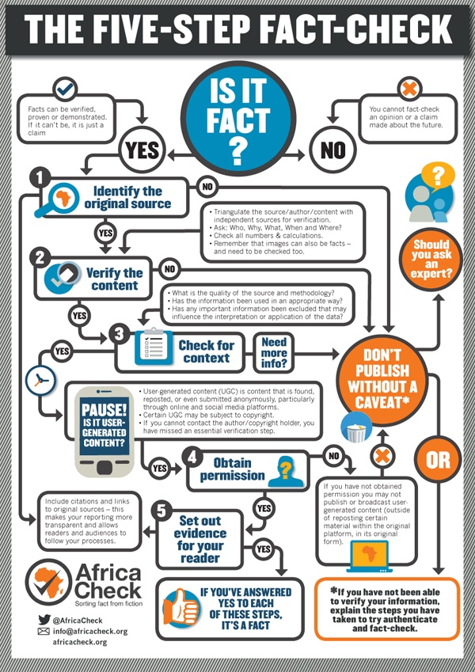
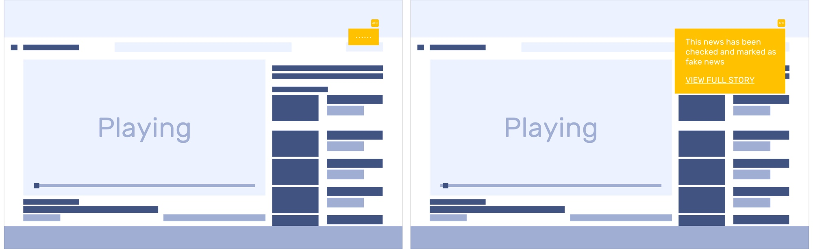
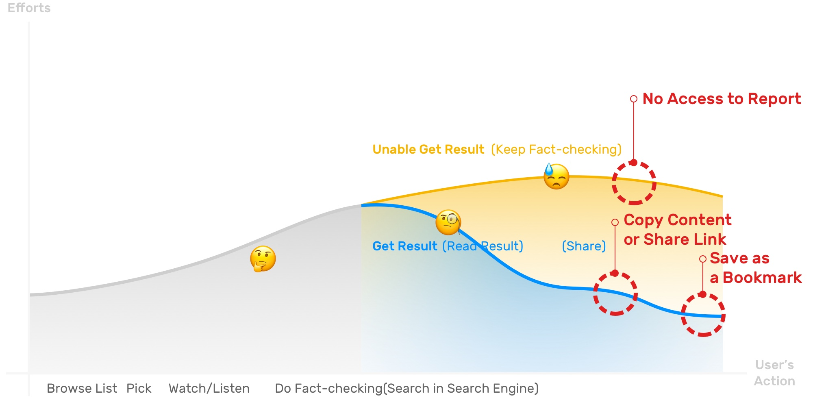
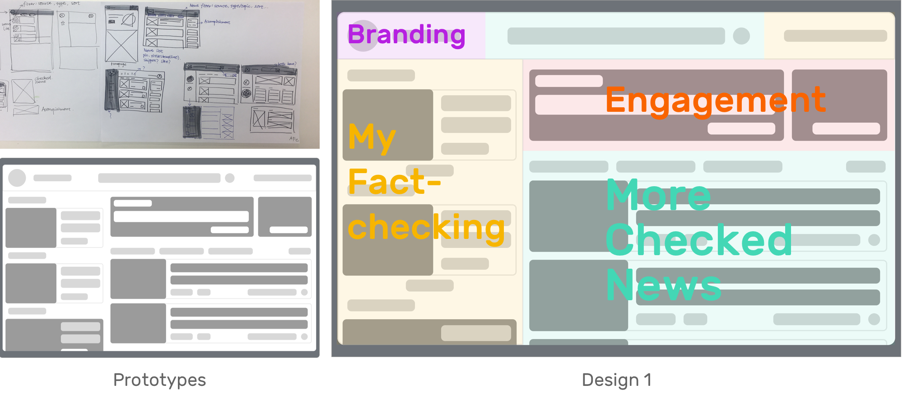

Faye Gong
This was a course project at Knight lab at Medill journalism college.
The goal of the lab is
Overview
PROJECT TYPE
Coursework
EECS 492
@Medill J college
Knight lab
My work
Research
Product Design
Produce Management
TOOLS
Sketch
Framer X
Trello
TEAM
Alexi
Matthew
3
What is the mission of automated fact checking project and Knight Lab?
Northwestern University Knight Lab is a community of designers, developers, students, and educators working on experiments designed to push journalism into new spaces.
Project Brief
The Challenge
Fact-checking is difficult and time-consuming for journalists, which creates a significant gap between the moment
a politician makes a statement and when the fact-check is
ultimately published.——
The challenge would be to provide immediate access to the facts in real or semi-real time.
The Goal
My design goal is to make those result more accessible and eaiser for users when they want to know whether their judgement have been diased.
The current fact-checking difficulties
It is demonstrably the case that once false information is encountered, it is difficult to remove from people’s mindset. Even if the information is corrected with later correct information, it is difficult to extinguish.
If false information is corrected in the moment however, there is a greater chance that it will be corre
The Outcome
The goal would be to provide factual verification of the news as it is presented that supports further questions about the context (history, alternative points of view, evidence, etc.) of a news story and/or quote. animation

Process
Agile software development and project management

As the studio plan and product management, We seperate this 10 weeks to 5 two-weeks sprint and each focused on one user scenairo.
Sprint 0
PLan + Research
User Research
To better understand video news audience's experience, expectations, pain points and also the flow of doing fact-checking, I conducted 5 indepth interviews with video audiences, 2 stakeholder interviews with the news generators and 1 contextual observation.
What are the current fact-checking solutions?
""
”Another limitation is the outdated nature of the fact-checkers’
publishing platforms."
"This limits how well they can be used in computational projects.“
——The Quest to Automate Fact-Checking
What are the current challenges in using AI fact-checking for users?
Instead of finding claims to check, getting data to check claims these difficulties of implementing Automated fact-checking, user's action also have been hampered by confusion and low feasibility brought by voice interaction
Why the current video fact-checking methods failed?
Journey Map | Current Check-in Flow and Pain Points

What do they want and desire?
Some key questions synthesized from interviews
Could I
See the news I did fact-checking previously?
Browse more checked news?
View the detailed information about the fact-checking result?
Run this only on CNN?
See the result instead of listening?
Share the result with friends or social media?
See the script while checking?
Customize my trigger words?
See how many fact-checking I accomplished so far?
Request a fact-checking?
Sprint 1
Explore
Synthesized Insights
User's actions and expectations before

Break down the journey to two touch point and produce.
What did I do for concept exploration?

What
User's actions and expectations after

Sprint 2
Conversational and computational fact-checking
Scenario #1

Tools: Tortu
https://tortu.io/prototype/afab57
Design Sprint Result
Sprint 3
Chrome Extension user flow
Scenario #1 Mode 1 Active mode user flow
User's needs and desirability
4 panels


Mode 1: Active Mode
Scenario #2 Mode 2 user flow
User's needs and desirability
4 panels
Mode 2: Active Mode

Scenario #3 Mode 3 user flow
User's needs and desirability
4 panels
Mode 3: Active Mode
User testing feedback
Design sprint result
Sprint 4
Website Design
Scenario #1 Find check history
User's needs and desirability
4 panels

Scenario #1 View more checked facts
User's needs and desirability
4 panels


Design 1 testing result
1. 2 scrollable collumms on the screen is bit hard to manipulate.
2. the function of each area is not very clear and intuitive.
Design 2 testing result
1.

Design 3 testing result
1.